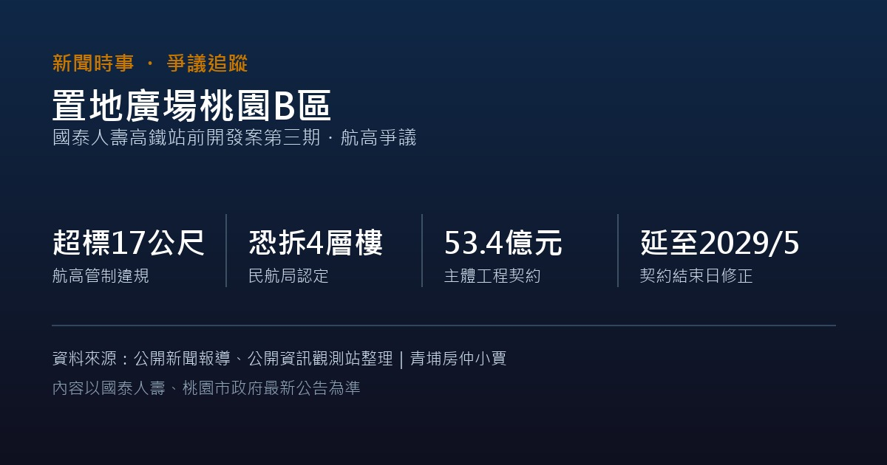

封面照片：置地廣場A區Xpark入口（非B區實景）｜S8321414｜Wikimedia Commons｜CC BY-SA 4.0
置地廣場桃園B區超出航高限制，恐拆4層樓
作者 周家篁 最後更新： 資料整理：統計至 2026 年 10 月公開報導
「置地廣場·桃園」是國泰人壽在桃園高鐵站「後站」打造的複合商場，2020 年開幕，目前已營運的 A 區就是 Xpark 水族館、COZZI Blu和逸飯店、新光影城所在的那棟。B 區是後續擴建的新商辦，2026 年 7 月傳出其中兩棟大樓因位於桃園機場航高管制的圓錐面範圍內，高度分別達 58.8 公尺與 59.9 公尺，超出當地容許的最大高度 42 公尺，超標約 17 公尺，原訂時程生變。
提醒：這個 B 區跟國泰人壽近期在高鐵「前站」動土的另一個新案（總投資約 500 億元、規劃 5 棟大樓）是不同基地、不同案子，只是同一家公司開發，很容易被新聞報導混用。前站新案的介紹另見：國泰人壽高鐵站前開發案動土，總投資約 500 億元。
航高超標事件經過
桃園機場公司於 2026 年 4 月辦理障礙物查報時，發現置地廣場桃園B區的兩棟大樓超出航高管制。桃園市都發局邀集國泰人壽、三井工程、交通部民用航空局及桃園國際機場公司召開協調會，民航局當場確認「確實超出航高限制，依法應拆除超高部分，且無施工容許誤差」。桃園市政府建管處說明，後續須辦理變更設計，且因原監造建築師已故，須先完成更換監造建築師，再進行環境影響差異分析與都市設計審議，才能動工拆除；外界傳出恐需拆除約 4 層樓，但實際拆除範圍仍待正式變更設計確認。
國泰人壽代表在協調會中承諾「將全力配合改善作業，督導相關團隊積極辦理拆除工程，力求以最短時間完成拆除超高部分」。桃園機場公司已將超高部分列入「B型機場障礙物圖」公告，會持續列管至完全符合航高管制規定為止。截至 2026 年 8 月的公開報導，尚未有具體的拆除開工日期或新的完工時程。
最新進度：工程契約結束日延長
2026 年 10 月 21 日，國泰金控代子公司國泰人壽在公開資訊觀測站發布兩則重大訊息，修正「置地廣場桃園B區」的工程承攬契約結束日，變動緣由均為「工程設計變更」：
| 工程項目 | 契約金額 | 原契約結束日 | 修正後結束日 |
|---|---|---|---|
| 建築主體工程 | 約 53.4 億元 | 2026/11/30 | 2029/5/30 |
| 水族館相關工程（擬岩、壓克力、防水、維生系統及單元水槽） | 約新台幣1.93億元＋美金690萬元 | 2027/1/14 | 2027/6/30 |
兩則公告均註記「變動後對公司財務業務之影響：無」。公告本身沒有直接寫明與航高爭議的關聯，但從時間點與「工程設計變更」的理由來看，應與前述超高部分須變更設計、拆除的進程相關，實際關聯請以國泰金控正式說明為準。資料來源：公開資訊觀測站重大訊息公告（國泰金控代子公司國泰人壽，2026/10/21）。
對買方的實際影響：這起爭議涉及變更設計、拆除工程與主管機關審查，會直接牽動招商、租賃與周邊商辦行情的時程預期。如果你評估的物件跟置地廣場B區的完工進度有關（例如看中「商場、水族館周邊即將擴大」的題材），建議先確認最新拆除與變更設計進度，不要只看最初公告的樂觀時程。
本文整理自公開新聞報導（中央社、自由財經、經濟日報等）及公開資訊觀測站重大訊息公告，事件與時程持續發展中，實際進度請以國泰人壽、國泰金控、桃園市政府都發局及建管處最新公告為準，本文不構成任何投資或購屋建議。